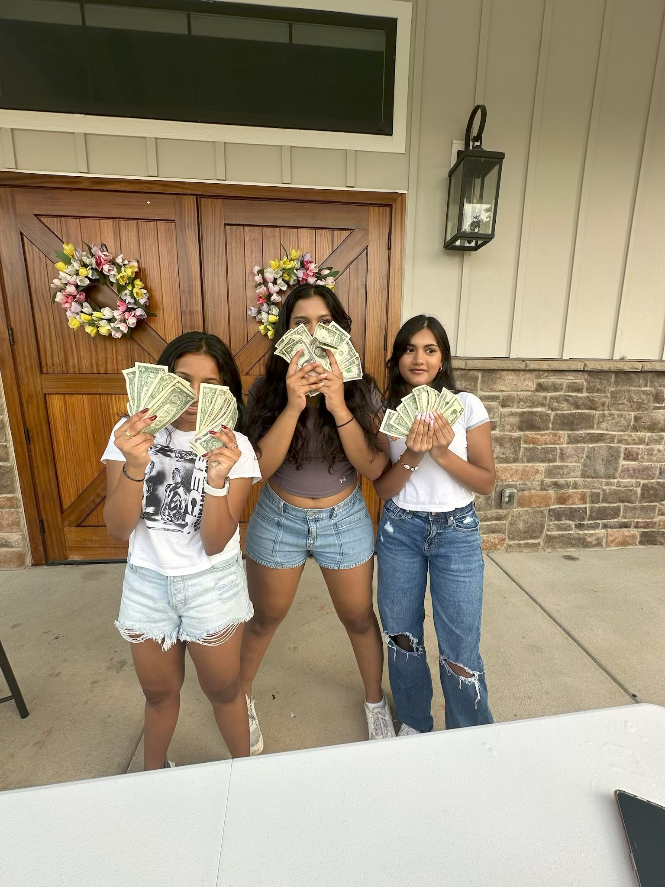
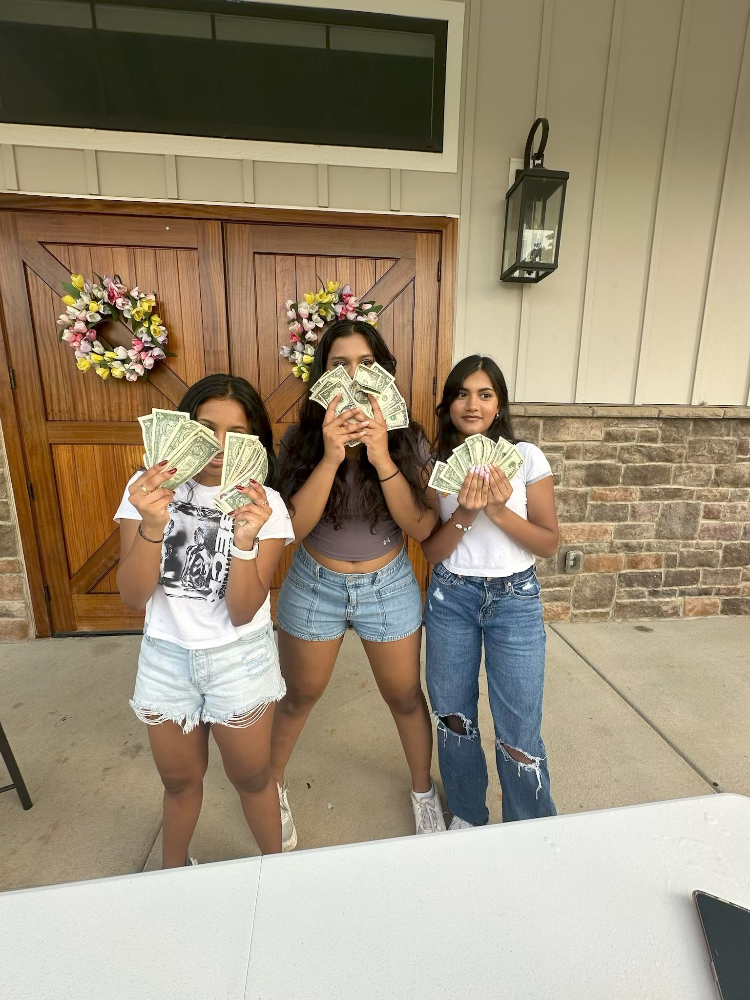

About Us
Smita Jayaprakash – Co-Founder & Co-President:
Smita is a high school student passionate about medicine, community service, and equity in healthcare. She co-founded Operation Lifeline to help close the healthcare gap for underprivileged families in Charlotte. With experience in EMS, medical research, hospital internships, and leadership programs, Smita leads with compassion, creativity, and purpose.
Aarav Parikh – Co-Founder & Co-President:
Aarav is a driven student with a deep interest in healthcare innovation and social impact. He helps organize fundraising events, lead partnerships, and expand Operation Lifeline’s mission across local communities.
Roshini – Co-Founder & Vice President:
Roshini is a dedicated leader who coordinates events, manages outreach, and ensures every initiative runs with purpose and impact.
Events and Fundraisers
Operation Lifeline organizes creative and community-driven events to raise funds and awareness for children in need of healthcare support. Below are some of our most impactful efforts:
Bake Sale – August 9, 2025
Location: Oldenburg Clubhouse, Grand Oak Drive, Waxhaw, NC
Partnered with: Make-A-Wish Foundation of America
Funds Raised: Ongoing (goal: $750 and beyond)
We hosted a large-scale bake sale featuring homemade desserts including cake pops, brownies, and chocolate chip cookies. The event took place at a neighborhood clubhouse and was promoted through social media and local outreach. Community members attended in large numbers to support the cause, and all proceeds were donated to the Make-A-Wish Foundation to help grant life-changing wishes for critically ill children.
Menu:
Cake Pops: $2.00 each
Chocolate Chip Cookies: $1.50 each
Brownies: $1.75 each
Efford Park Fundraiser – Summer 2024
Location: Efford Park, Charlotte, NC
Funds Raised: $1120
This outdoor community fundraiser brought families and students together for a day of games, treats, and giving back. We hosted interactive activities, shared our mission, and sold baked goods to raise money for healthcare-related needs in underserved communities. The event was entirely student-organized and raised over $500 in a single afternoon.

BCH Octoberfest Booth – Fall 2023
Location: Ballantyne Corporate Halloween Festival (or similar community event)
Funds Raised: $800
During the annual Octoberfest celebration, Operation Lifeline hosted a themed dessert booth. We made and sold Halloween-themed cake pops, cupcakes, and cookies to hundreds of attendees. The event offered a fun way to raise money for our healthcare initiatives while bringing awareness to the medical struggles many children face. Community engagement was high, and our student volunteers helped educate attendees about our mission while running the booth.
SAT/ACT Tutoring for Donations – Ongoing
Platform: In-person and virtual
Funds Raised: Over $1800
As part of our commitment to service, our team offers one-on-one SAT and ACT tutoring sessions to students in exchange for donations. This initiative allows us to raise funds while supporting academic success within the community. Students and parents appreciate the dual benefit — test prep and giving back to a great cause.
Cancer Awareness Booths and Game Day Events
Location: Local parks, school events, and sports games
Funds Raised: Varies by event
To promote cancer awareness and prevention, we’ve held informational booths at community parks and school sporting events. These booths often include donation jars, educational flyers, and themed merchandise. These events are designed to both raise funds and educate the public, especially teens, about the importance of early detection and access to care.
Leukemia & Lymphoma Society – Student Visionaries Campaign (Spring 2024)
Campaign: LLS Charlotte Student Visionaries of the Year
Impact: Awareness, community outreach, and leadership development
As part of the Leukemia & Lymphoma Society’s Student Visionaries of the Year campaign, we led a team that spread awareness about blood cancers while raising funds to support patients and survivors. This experience strengthened our leadership, outreach, and organizational skills while expanding our impact into national-level healthcare advocacy.
 
